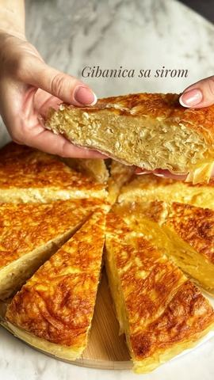

Moja beleška
Sačuvano
Ocena
Ne pamtim kada sam je poslednji put spremala, a toliko je izdašna i svi u kući je vole. Kako za doručak, tako i za večeru. Lagana je, mekana i sočna iznutra, a hrskava spolja, a miris dok se peče neodoljiv.
Sastojci
- Sastojci
Priprema
1 prašak za pecivo 📌 Priprema: 1. Podmažite pleh i stavite 2 kore tako da vire sa strane. Jednu koru ostavite sa strane za kraj. 2. Ostatak kora iscepajte i umačite u umućenu smesu. 3. Preklopite korama koje vire, pa preko stavite preostalu koru, uvucite ivice. 4. Premažite mešavinom ulja i kisele vode. 5. Pecite na 200°C oko 40 minuta, dok ne dobije zlatnu boju. Napomena: Sitan sir možete koristiti samostalno ili kombinovati pola sitnog i pola feta sira za jači ukus. Uživajte ! 💛
Originalni opis sa Instagrama
Gibanica sa sirom Ne pamtim kada sam je poslednji put spremala, a toliko je izdašna i svi u kući je vole. Kako za doručak, tako i za večeru. Lagana je, mekana i sočna iznutra, a hrskava spolja, a miris dok se peče neodoljiv. 📌 Sastojci: 500 g kora za gibanicu 400 g sitnog sira 5 jaja 200 ml kisele vode 100 ml ulja 1 prašak za pecivo 1 velika čaša kisele pavlake (400gr) 2-3 kašičice soli (po ukusu) 📌 Priprema: 1. Podmažite pleh i stavite 2 kore tako da vire sa strane. Jednu koru ostavite sa strane za kraj. 2. Ostatak kora iscepajte i umačite u umućenu smesu. 3. Preklopite korama koje vire, pa preko stavite preostalu koru, uvucite ivice. 4. Premažite mešavinom ulja i kisele vode. 5. Pecite na 200°C oko 40 minuta, dok ne dobije zlatnu boju. Napomena: Sitan sir možete koristiti samostalno ili kombinovati pola sitnog i pola feta sira za jači ukus. Uživajte ! 💛 • • • #ukusnahrana #brzoilako #recepti #ukusno #ukusnirecepti #gibanica #pitasasirom